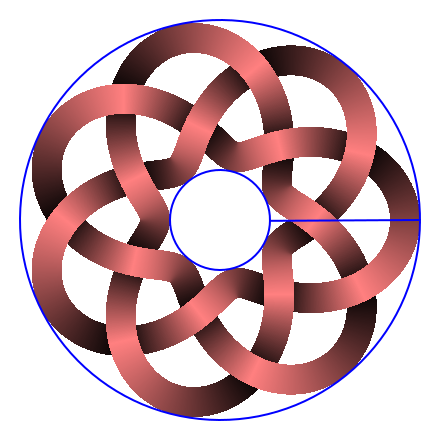
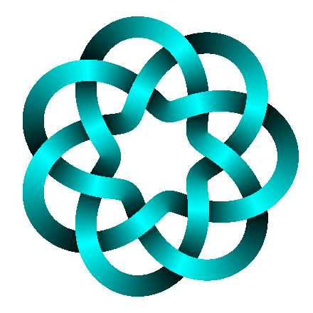
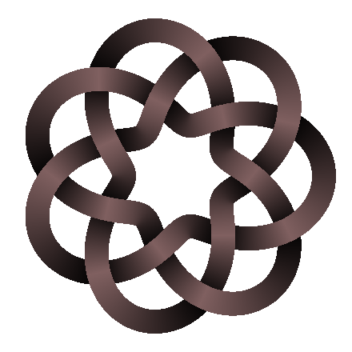
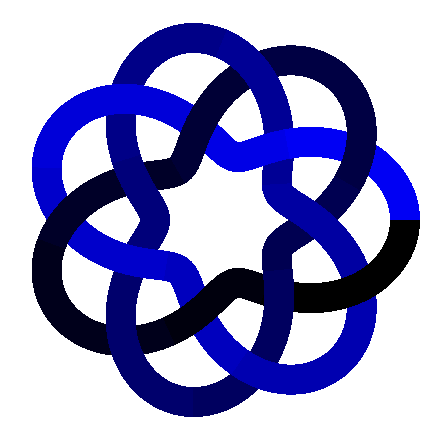

User guide¶
DrawTurksHead can be used on the command line or as a Python package.
Command-line¶
Basic usage:
$ python -m DrawTurksHead --leads=3 --bights=7
For details of available parameters:
$ python -m DrawTurksHead --help
Python package¶
Import:
>>> import cairo
>>> from DrawTurksHead import TurksHead
Create a Turk’s head:
>>> knot = TurksHead(bights=7, leads=3, inner=50, outer=200, line=30)
Create a Cairo context:
>>> img = cairo.ImageSurface(cairo.FORMAT_RGB24, 440, 440)
>>> ctx = cairo.Context(img)
>>> ctx.set_source_rgb(1, 1, 1)
>>> ctx.paint()
>>> ctx.translate(220, 220)
Draw the Turk’s head on the Cairo context:
>>> knot.draw(ctx)
Draw circles to verify inner and outer radiuses:
>>> ctx.set_source_rgb(0, 0, 1)
>>> ctx.arc(0, 0, 50, 0, 6.30)
>>> ctx.arc(0, 0, 200, 0, 6.30)
>>> ctx.stroke()
Save the result to a file:
>>> img.write_to_png("doc/doctest/1.png")

doc/doctest/1.png
Let’s define a utility method:
>>> def draw_to_png(knot, filename):
... img = cairo.ImageSurface(cairo.FORMAT_RGB24, 440, 440)
... ctx = cairo.Context(img)
... ctx.set_source_rgb(1, 1, 1)
... ctx.paint()
... ctx.translate(220, 220)
... knot.draw(ctx)
... img.write_to_png(filename)
You can choose the color of the drawing by providing a Colorer:
>>> class MyColorer(object):
... def compute_color_hsv(self, knot, k, theta, altitude):
... h = 180 + k * 360 / knot.d
... s = 1
... v = .5 + altitude / 2
... return h, s, v
>>> knot = TurksHead(
... bights=7, leads=3,
... inner=50, outer=200, line=30,
... colorer=MyColorer()
... )
>>> draw_to_png(knot, "doc/doctest/2.png")

doc/doctest/2.png
Or:
>>> from DrawTurksHead import DefaultColorer
>>> class MyColorer(DefaultColorer):
... def compute_color_hsv(self, knot, k, theta, altitude):
... h, s, v = super(MyColorer, self).compute_color_hsv(knot, k, theta, altitude)
... s = 0.25
... v = v / 2
... return h, s, v
>>> knot = TurksHead(
... bights=7, leads=3,
... inner=50, outer=200, line=30,
... colorer=MyColorer()
... )
>>> draw_to_png(knot, "doc/doctest/3.png")

doc/doctest/3.png
Or:
>>> import math
>>> class MyColorer(object):
... def compute_color_rgb(self, knot, k, theta, altitude):
... assert 0 <= theta < 2 * knot.q_prime * math.pi
... b = theta / (2 * knot.q_prime * math.pi)
... return 0, 0, b
>>> knot = TurksHead(
... bights=7, leads=3,
... inner=50, outer=200, line=30,
... colorer=MyColorer()
... )
>>> draw_to_png(knot, "doc/doctest/4.png")

doc/doctest/4.png